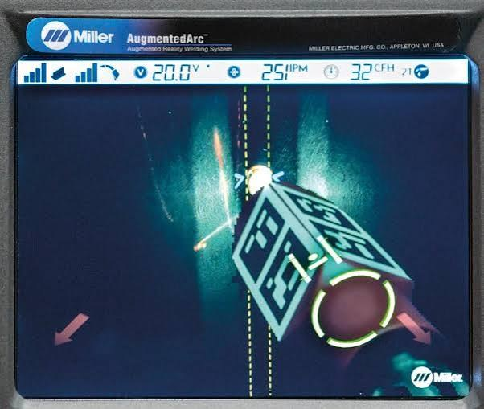
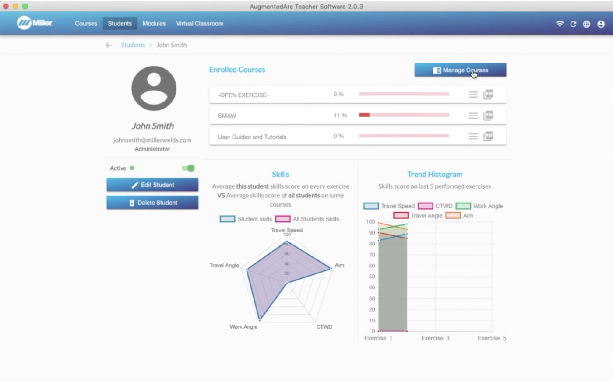

This page collects the simulator feedback taught in Unit 2 in one place, for when you sit down with a student’s report. The screens are from the Miller AugmentedArc system. Other systems use different names and layouts, so check your system’s manual.
Select the information icon after a term for a short definition. All terms are in the Glossary.
1. During the weld

- The guidesGlossary: Real-time parameter guides. Each one tracks one part of technique: contact-tip-to-work distance, gun anglesGlossary: Gun angles, travel speed, and aim. A guide turns red when that part drifts and green when it’s back on track.
- The machine settings. Shown across the top of the view. Here: 20.0 V, 251 IPM wire feed speed, and 32 CFH gas.
- The shade. The screen darkens like a welding lens during the weldGlossary: Simulated helmet shade.
Your job during the weld: watch the student, not the screen. Pay attention to body position, and to how comfortable and relaxed they are.
2. After the weld: the analysis screen
When the joint is filled, the system shows the analysis screenGlossary: Simulation analysis screen. Select a numbered marker to see what each part shows. This report is the one from Unit 2’s “Reading a full report.”
![An AugmentedArc analysis screen. Technique Parameters score 96 against a target of 90, marked with a green check. Six rows show work angle averaging 38 degrees scoring 95, travel angle averaging 29 degrees scoring 87 and highlighted in red, contact-tip-to-work distance averaging 0.75 inches scoring 94, travel speed averaging 9.7 inches per minute scoring 98, aim averaging 0.07 inches scoring 97, with voltage and wire feed speed both scoring 100. Each row has a trace graph showing the value over the length of the weld, with red segments where the system flagged travel angle.](images/augmentedarc-analysis-screen.jpg)
Select a marker to begin.
Markers: 1 Technique score and equipment check · 2 The simulated weld, replay, and 3D view · 3 A parameter row · 4 The graph along the weld · 5 A score highlighted red · 6 Voltage and wire feed speed. Still from a Miller Electric video.
1. Technique score and equipment check
The technique scoreGlossary: Technique score, against a target score. A green check means the attempt passed. The equipment settingsGlossary: Equipment settings (scored) get their own check underneath. On this report: 96 against a target of 90.
2. The simulated weld, replay, and 3D view
A picture of the simulated weld. ReplayGlossary: Replay, at the top of the screen, plays the weld back. Show 3D, or the AR button on the simulator, shows it in 3D.
3. A parameter row
Each row is one technique parameter: its name and its average for the weld. This row: work angle, average 38°, scored 95. Read the acceptable range from the exercise setup screen, not from the numbers along the graph.
4. The graph along the weld
The value of the parameter along the length of the weld, with red sections where the system flagged it. Travel angle averaged 29°, but its line reaches the top of the graph twice. An average can look fine while the line shows the trouble.
5. A score highlighted red
A parameter that didn’t pass is highlighted red. Travel angle scored 87, even though the attempt passed. That’s why you scan for red after you read the overall score.
6. Voltage and wire feed speed
These are machine settings, not technique. The report checks them separately: 18.3 V and 293 IPM, both scored 100.
3. What each parameter measures
The report scores five parts of techniqueGlossary: Technique parameters.
- Work angle
- Work angle affects the evenness of the weld bead. If it’s off, the weld comes out too flat or too steep. On a fillet weld, look for unequal legs or undercut on one side.
- Travel angle
- Travel angle affects the consistency of the weld bead. Holding the right travel angle makes sure the electrode melts into the base material properly.
- Contact-tip-to-work distance (CTWD)
- CTWD sets and keeps the right arc length for the welding process and electrode you’re using.
- Travel speed
- Travel speed controls heat input. Too fast, and the weld is narrow and may lack penetration. Too slow, and there’s too much heat and the weld runs too wide.
- Aim
- Aim keeps the movement of the electrode controlled, so it doesn’t point outside the area of the weldment you intend to weld.
The guides in the helmet group work angle and travel angle together as “gun angles.” The report splits them into two rows. Voltage and wire feed speed are machine settings, not technique, so the report checks them separately.
Check the range first. Each exerciseGlossary: Exercise has a setup screen that lists a minimum, a target, and a maximumGlossary: Target and range (min, max) for every parameter. The ranges shift with the joint and position. A reading only means something next to the range for the exercise the student welded.
4. Across attempts
In the Teacher SoftwareGlossary: Teacher Software, every attemptGlossary: Attempt is saved with its date and time and marked pass or fail. If the same parameter keeps coming up red, that’s the pattern to coach first. One red reading on one attempt may be a one-off. Select a numbered marker to see what the student overview shows.

Select a marker to begin.
Markers: 1 Enrolled Courses · 2 Skills · 3 Trend Histogram. Still from Miller Electric’s “AugmentedArc Teacher Software Profiles” video.
1. Enrolled Courses
Each course the student is enrolled in, with a progress bar. This student: SMAW, 11 percent.
2. Skills
This student’s average score on each skill, compared with the average of all students on the same courses.
3. Trend Histogram
Each skill score on the last five exercises performed. Use it with the readiness rule in Unit 4: consistent scores across the last 3 to 5 sessions, with nothing in red.
5. Reading a report, in order
- Check in with the student first. How did it feel? What did they struggle with? Treat what they tell you as something to check in the data.
- Start with the overall scoreGlossary: Overall score. It gives you an overview of how the student did on the weldment.
- Scan for red. Parameters highlighted in red are where attention needs to go first.
- Then the rest, with the student. Look at the other parameters, and at the lines, not just the averages.
Then give one cue. A good cue names one thing, says what to do rather than what the number was, and gives the student a way to check themselves.
Taught in Unit 2, Knowledge Building and Unit 4, Ready for the booth.